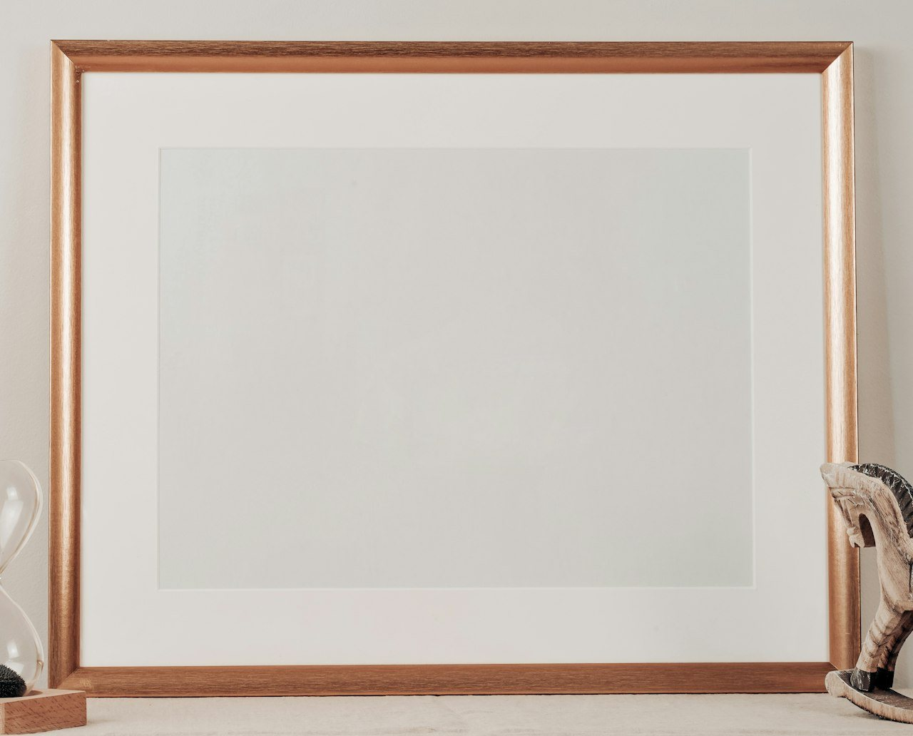

06 / 13
매트
매트는 작품과 유리 사이를 띄우는 두꺼운 종이로, 열네 가지 색을 둡니다.
지금 두른 매트 미색
열네 가지 색
색 면은 화면 색이다. 실제 매트는 공방에서 견본을 대 보고 고른다.
매트 폭
매트 폭은 작품이 클수록 넓힌다. 아래 여백을 위보다 1 cm 넓게 자르면 작품이 가운데보다 조금 위에 걸려 보인다.
- A4·사진 8×10 이하5 cm
- A3·4호 안팎6~7 cm
- 10호 안팎7~8 cm
- 20호 넘는 종이 작품9~10 cm
두께
- 한 겹 1.4 mm판화·사진·소묘. 기본
- 두 겹 2.8 mm창 경사면이 넓게 보인다. 30호 넘는 종이 작품
매트는 모두 중성지다. 값은 넓이 ㎡당 30,000원에 창 내기 6,000원를 더한다.